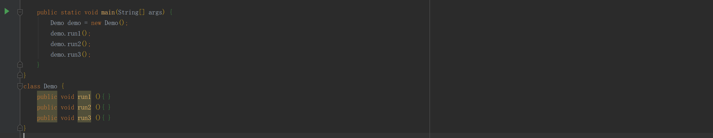

设计模式（Design pattern）代表了最佳的实践，通常被有经验的面向对象的软件开发人员所采用。设计模式是软件开发过程中面临的一般问题的解决方案。设计模式是一套被反复使用的、多数人知晓的、经过分类编目的、代码设计经验的总结。使用设计模式是为了重用代码、让代码更容易被他人理解、保证代码可靠性。
设计模式经典面试题
1原型设计模式的深拷贝和浅拷贝是什么，并写出深拷贝的两种方式的源码，(使用clone方法和序列化来实现)。
2设计模式的七大原则有哪些 在实际项目中哪些用导ocp原则。
3某商城的订单状态有多种，随着操作不同，改变订单状态，请使用状态模式进行设计，完成实际代码。
4单例模式的几种实现方式，各个方式的优缺点。
设计模式的七大原则
- 单一职责原则
- 降低类复杂度 一个类只负责一项职责提高可读性 可维护性
- 接口隔离原则
- 客户端不应该依赖他不需要的接口，即一个类对另外一个类的依赖应该建立在最小接口上。
详情：项目包名(second)
- 依赖倒转原则
- 高模块不应该依赖底层模块，二者应该依赖其抽象。
- 抽象不应该依赖细节，细节应该依赖抽象。
- 依赖倒转原则是相对有细节的多变性，抽象的东西要稳定的多，以抽象为基础的搭建架构比以细节为基础搭建架构稳定的多，java 中抽象指接口或者抽象类，细节则是实现。
- 使用接口是为了定制规范，展现细节交给子类去完成。
- *** 依赖关系的 传递的三种方式 接口传递，构造方法传递，setter 方法传递
详情：项目包名(third)
- 里氏替换原则
- 所谓里氏替换原则就是正确的使用继承关系，父类凡事已经实现好的方法，实际上已经设定规范和契约，虽然不强制子类必须遵循子类也遵循这些规则，但是如果子类对这些已经实现了的方法任意修改，就会对整体进行破坏。
- 解决的思路是 原来的父类和子类都继承一个更加通俗的基类，原有的继承关系去掉，采用依赖 聚合 组合的代替关系。
详情：项目包名(four)
- 开闭原则ocp
- 开闭原则是最重要的原则，即当开发过程中，对一个软件的实体，模块和函数应该对扩展开放，对修改关闭，所谓对扩展开放，在原来的基础上，用抽象来扩展方法，用实现来增添细节，而不是在原有的基础去进行修改。
- 迪米特法则
- 合成复用原则
项目地址
跳转Gitee